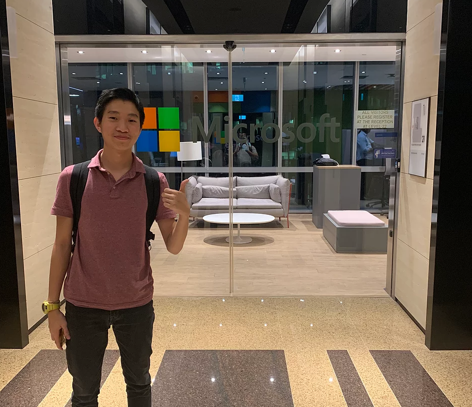
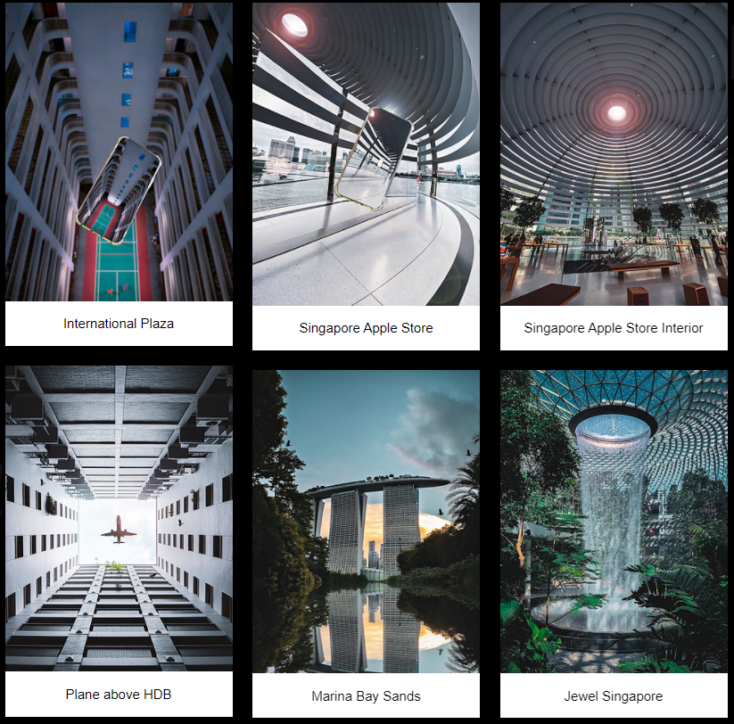

I am passionate about my work and the tasks I do as I have source of motivation that drives me to do my best in whatever am doing. I have this passion that
carry me to challenge myself in my daily life and at the same time learning new skills to helped me to do better in my
works.
My goal is to become a system administrator that is responsible on the different aspects in a company IT systems, that
is required to keep up to date on the latest new development in the technology in the world industry.

Skills
Level Of Knowledge
Grades
Robatic Process Automation
7/10
C+
Programming (C#, C++, Python)
6/10
B
Web Development
6/10
C+
Database
7/10
B
Cloud Computing
7/10
C
I throughly enjoy the challenges of problem solving as this challenges and growth is what am looking forward to within my career life. I sincerely hope that I can contribute these skills I learned, and the practical I done to good use.
Type Of Sports
Level of knowledge (Fantastic, Average, Bad)
Represent (Role)
Soccer
Fantastic
Captain for "The Crew FC"
Table Tennis
Average
2019 CE Vice-Captain
Badminton
Fantastic
HIHS double player
Soccer is so much fun and relaxing to me especially the feeling when I score goals or my teammates. That feeling fulfills is amazing and it's release stress and frustration.

Type Of Software Used
Level of knowledge (Fantastic, Average, Bad)
Adobe Lightroom
Fantastic
Adobe PhotoShop
Average
Adobe Premiere Pro
Average
Photography has always been one of my favorite hobbies whenever am free I will go out to shoot. I love to take different perspective and of architecture and all kind of stunning things. To me having a different view of things means you have a more open mind to the world.